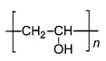
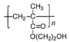
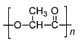
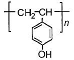
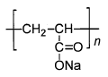

令和6年度 問15 高分子化学
次の高分子材料に関するA〜Eの記述のうち、最も不適切なものの組み合わせはどれか。
| 項目 | 化学式 | 特徴 |
|---|---|---|
| A |  |
耐候性に優れ、電気絶縁性と自己消火性があるため、電線被覆材料として利用されている。 |
| B |  |
透明性に優れ、水で膨潤する分子構造を持つため、ソフトコンタクトレンズの材料として用いられる。 |
| C |  |
酵素的又は非酵素的加水分解反応によりモノマー単位まで分解されるため、生分解性プラスチックとして知られている。 |
| D |  |
フェノールとホルムアルデヒドから得られる熱硬化性樹脂であり、電気絶縁材料として利用されている。 |
| E |  |
水と強く相互作用するため、これを三次元的に架橋した材料は高吸水性高分子として利用されている。 |
①
AとB
②
AとD
③
BとC
④
CとD
⑤
DとE
正答
② AとD
正答は2番です。
A：不適切
化学式はポリビニルアルコール（PVA）ですが、記述はポリ塩化ビニル（PVC）のものです。PVAは親水性で、乳化分散剤や繊維加工剤として用いられます。
D：不適切
化学式はポリ（4-ビニルフェノール）ですが、記述はフェノールとホルムアルデヒドから得られるフェノール樹脂（ノボラック/レゾール）のものです。ポリ（4-ビニルフェノール）はノボラック樹脂の代替品としてレジスト材料などに用いられます。
B：適切
ポリメタクリル酸ヒドロキシエチルです。親水性ハイドロゲルとしてソフトコンタクトレンズに使用されます。
C：適切
ポリ乳酸（PLA）です。生分解性プラスチックの代表例です。
E：適切
ポリアクリル酸ナトリウムです。高吸水性高分子として紙おむつ等に広く利用されています。